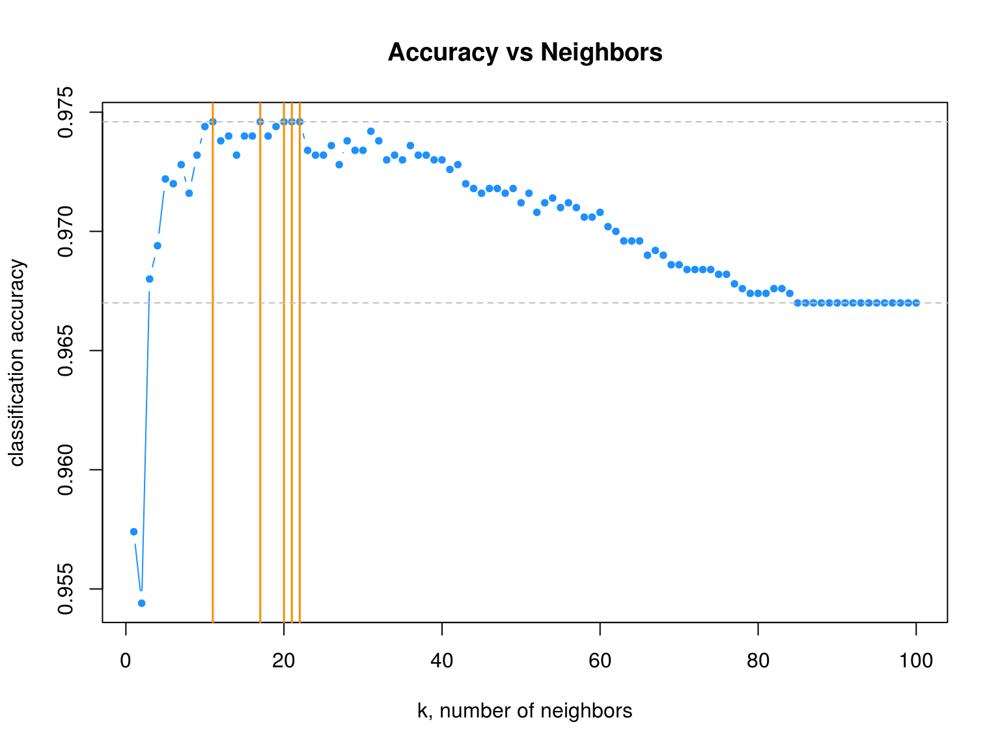
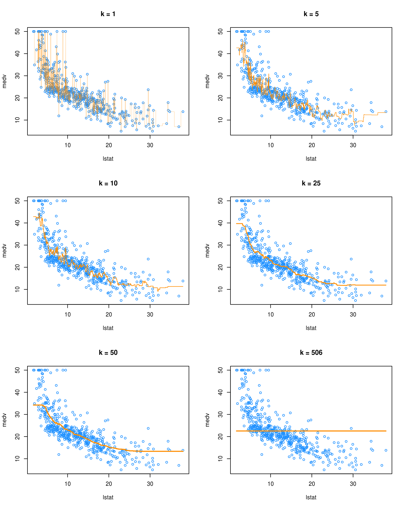

Chapter 16 k-Nearest Neighbors
In this chapter we introduce our first non-parametric method, \(k\)-nearest neighbors, which can be used for both classification and regression.
Each method we have seen so far has been parametric. For example, logistic regression had the form
\[ \log\left(\frac{p({\bf x})}{1 - p({\bf x})}\right) = \beta_0 + \beta_1 x_1 + \beta_2 x_2 + \cdots + \beta_p x_p. \]
In this case, the \(\beta_i\) are the parameters of the model, which we learned (estimated) by training (fitting) the model.
\(k\)-nearest neighbors has no such parameters. Instead, it has a tuning parameter, \(k\). This is a parameter which determines how the model is trained, instead of a parameter that is learned through training. Note that tuning parameters are not used exclusively used with non-parametric methods. Later we will see examples of tuning parameters for parametric methods.
16.1 Classification
library(ISLR)
library(class)
library(MASS)We first load some necessary libraries. We’ll begin discussing classification by returning to the Default data from the ISLR package. To illustrate regression, we’ll also return to the Boston data from the MASS package. To perform \(k\)-nearest neighbors, we will use the knn() function from the class package.
16.1.1 Default Data
Unlike many of our previous methods, knn() requires that all predictors be numeric, so we coerce student to be a 0 and 1 variable instead of a factor. (We can leave the response as a factor.)
set.seed(42)
Default$student = as.numeric(Default$student) - 1
default_index = sample(nrow(Default), 5000)
default_train = Default[default_index, ]
default_test = Default[-default_index, ]Also unlike previous methods, knn() does not utilize the formula syntax, rather, requires the predictors be their own data frame or matrix, and the class labels be a separate factor variable. Note that the \(y\) data should be a factor vector, not a data frame containing a factor vector.
# training data
X_default_train = default_train[, -1]
y_default_train = default_train$default
# testing data
X_default_test = default_test[, -1]
y_default_test = default_test$defaultThere is very little “training” with \(k\)-nearest neighbors. Essentially the only training is to simply remember the inputs. Because of this, we say that \(k\)-nearest neighbors is fast at training time. However, at test time, \(k\)-nearest neighbors is very slow. For each test case, the method must find the \(k\)-nearest neighbors, which is not computationally cheap. (Note that knn() uses Euclidean distance.)
head(knn(train = X_default_train,
test = X_default_test,
cl = y_default_train,
k = 3),
n = 25)## [1] No No No No No No No No No No No No No No No No No No No No No No No
## [24] No No
## Levels: No YesBecause of the lack of any need for training, the knn() function essentially replaces the predict() function, and immediately returns classifications. Here, knn() used four arguments:
train, the predictors for the train set.test, the predictors for the test set.knn()will output results for these cases.cl, the true class labels for the train set.k, the number of neighbors to consider.
accuracy = function(actual, predicted) {
mean(actual == predicted)
}We’ll use our usual accuracy() function to asses how well knn() works with this data.
accuracy(actual = y_default_test,
predicted = knn(train = X_default_train,
test = X_default_test,
cl = y_default_train, k = 5))## [1] 0.9684Often with knn() we need to consider the scale of the predictors variables. If one variable is contains much larger numbers because of the units or range of the variable, it will dominate other variables in the distance measurements. But this doesn’t necessarily mean that it should be such an important variable. It is common practice to scale the predictors to have 0 mean and unit variance. Be sure to apply the scaling to both the train and test data.
accuracy(actual = y_default_test,
predicted = knn(train = scale(X_default_train),
test = scale(X_default_test),
cl = y_default_train, k = 5))## [1] 0.9722Here we see the scaling improves the classification accuracy. This may not always be the case, and often, it is normal to attempt classification with and without scaling.
How do we choose \(k\)? Try different values and see which works best.
set.seed(42)
k_to_try = 1:100
acc_k = rep(x = 0, times = length(k_to_try))
for(i in seq_along(k_to_try)) {
pred = knn(train = scale(X_default_train),
test = scale(X_default_test),
cl = y_default_train,
k = k_to_try[i])
acc_k[i] = accuracy(y_default_test, pred)
}The seq_along() function can be very useful for looping over a vector that stores non-consecutive numbers. It often removes the need for an additional counter variable. We actually didn’t need it in the above knn() example, but it is still a good habit. Here we see an example where we would have otherwise needed another variable.
ex_seq = seq(from = 1, to = 100, by = 5)
seq_along(ex_seq)## [1] 1 2 3 4 5 6 7 8 9 10 11 12 13 14 15 16 17 18 19 20ex_storage = rep(x = 0, times = length(ex_seq))
for(i in seq_along(ex_seq)) {
ex_storage[i] = mean(rnorm(n = 10, mean = ex_seq[i], sd = 1))
}
ex_storage## [1] 0.948629 5.792671 11.090760 15.915397 21.422372 26.106009 30.857772
## [8] 35.593119 40.958334 46.338667 50.672116 55.733392 60.387860 65.747387
## [15] 71.037306 76.066974 80.956349 85.173316 91.077993 95.882329Naturally, we plot the \(k\)-nearest neighbor results.
# plot accuracy vs choice of k
plot(acc_k, type = "b", col = "dodgerblue", cex = 1, pch = 20,
xlab = "k, number of neighbors", ylab = "classification accuracy",
main = "Accuracy vs Neighbors")
# add lines indicating k with best accuracy
abline(v = which(acc_k == max(acc_k)), col = "darkorange", lwd = 1.5)
# add line for max accuracy seen
abline(h = max(acc_k), col = "grey", lty = 2)
# add line for prevalence in test set
abline(h = mean(y_default_test == "No"), col = "grey", lty = 2)
max(acc_k)## [1] 0.9746max(which(acc_k == max(acc_k)))## [1] 22We see that four different values of \(k\) are tied for the highest accuracy. Given a choice of these four values of \(k\), we select the largest, as it is the least variable, and has the least chance of overfitting.
Also notice that, as \(k\) increases, eventually the accuracy approaches the test prevalence.
mean(y_default_test == "No")## [1] 0.96716.1.2 Iris Data
Like LDA and QDA, KNN can be used for both binary and multi-class problems. As an example, we return to the iris data.
set.seed(430)
iris_obs = nrow(iris)
iris_index = sample(iris_obs, size = trunc(0.50 * iris_obs))
iris_train = iris[iris_index, ]
iris_test = iris[-iris_index, ]All the predictors here are numeric, so we proceed to splitting the data into predictors and classes.
# training data
X_iris_train = iris_train[, -5]
y_iris_train = iris_train$Species
# testing data
X_iris_test = iris_test[, -5]
y_iris_test = iris_test$SpeciesLike previous methods, we can obtain predicted probabilities given test predictors. To do so, we add an argument, prob = TRUE
iris_pred = knn(train = scale(X_iris_train),
test = scale(X_iris_test),
cl = y_iris_train,
k = 10,
prob = TRUE)iris_pred## [1] setosa setosa setosa setosa setosa setosa
## [7] setosa setosa setosa setosa setosa setosa
## [13] setosa setosa setosa setosa setosa setosa
## [19] setosa setosa setosa setosa versicolor versicolor
## [25] versicolor versicolor versicolor versicolor versicolor versicolor
## [31] versicolor versicolor versicolor versicolor versicolor versicolor
## [37] versicolor versicolor versicolor versicolor versicolor versicolor
## [43] versicolor versicolor versicolor versicolor versicolor versicolor
## [49] virginica versicolor virginica virginica virginica virginica
## [55] virginica virginica virginica versicolor versicolor virginica
## [61] virginica virginica virginica versicolor virginica virginica
## [67] virginica virginica virginica versicolor virginica virginica
## [73] virginica virginica versicolor
## attr(,"prob")
## [1] 1.0000000 1.0000000 1.0000000 1.0000000 1.0000000 1.0000000 1.0000000
## [8] 1.0000000 1.0000000 1.0000000 1.0000000 1.0000000 1.0000000 1.0000000
## [15] 1.0000000 1.0000000 1.0000000 1.0000000 1.0000000 1.0000000 1.0000000
## [22] 1.0000000 0.9000000 1.0000000 0.8000000 1.0000000 0.9000000 0.9000000
## [29] 0.9000000 0.8000000 1.0000000 0.9000000 1.0000000 0.8000000 0.5000000
## [36] 0.8000000 0.9000000 0.8000000 1.0000000 1.0000000 0.7272727 0.9000000
## [43] 0.8000000 0.9000000 1.0000000 1.0000000 0.9000000 0.9000000 0.9000000
## [50] 0.7000000 0.8000000 0.7272727 0.8000000 0.8000000 0.8000000 0.9000000
## [57] 0.6000000 0.6000000 0.5000000 0.9000000 0.6000000 1.0000000 0.6000000
## [64] 0.5000000 0.7000000 0.9000000 1.0000000 0.9000000 0.6000000 0.7000000
## [71] 0.8000000 0.9000000 0.8000000 0.9000000 0.5000000
## Levels: setosa versicolor virginicaUnfortunately, this only returns the predicted probability of the most common class. In the binary case, this would be sufficient, however, for multi-class problems, we cannot recover each of the probabilities of interest.
attributes(iris_pred)$prob## [1] 1.0000000 1.0000000 1.0000000 1.0000000 1.0000000 1.0000000 1.0000000
## [8] 1.0000000 1.0000000 1.0000000 1.0000000 1.0000000 1.0000000 1.0000000
## [15] 1.0000000 1.0000000 1.0000000 1.0000000 1.0000000 1.0000000 1.0000000
## [22] 1.0000000 0.9000000 1.0000000 0.8000000 1.0000000 0.9000000 0.9000000
## [29] 0.9000000 0.8000000 1.0000000 0.9000000 1.0000000 0.8000000 0.5000000
## [36] 0.8000000 0.9000000 0.8000000 1.0000000 1.0000000 0.7272727 0.9000000
## [43] 0.8000000 0.9000000 1.0000000 1.0000000 0.9000000 0.9000000 0.9000000
## [50] 0.7000000 0.8000000 0.7272727 0.8000000 0.8000000 0.8000000 0.9000000
## [57] 0.6000000 0.6000000 0.5000000 0.9000000 0.6000000 1.0000000 0.6000000
## [64] 0.5000000 0.7000000 0.9000000 1.0000000 0.9000000 0.6000000 0.7000000
## [71] 0.8000000 0.9000000 0.8000000 0.9000000 0.500000016.2 Regression
We quickly illustrate KNN for regression using the Boston data. We’ll only use lstat as a predictor, and medv as the response. We won’t test-train split for this example since won’t be checking RMSE, but instead plotting fitted models. There is also no need to worry about scaling since there is only one predictor.
X_boston = Boston["lstat"]
y_boston = Boston$medvWe create a “test” set, that is a grid of lstat values at which we will predict medv.
lstat_grid = data.frame(lstat = seq(range(X_boston$lstat)[1], range(X_boston$lstat)[2], by = 0.01))Unfortunately, knn() from class only handles classification. To perform regression, we will need knn.reg() from the FNN package. Notice that, we do not load this package, but instead use FNN::knn.reg to access the function. This is useful since FNN also contains a function knn() and would then mask knn() from class.
pred_001 = FNN::knn.reg(train = X_boston, test = lstat_grid, y = y_boston, k = 1)
pred_005 = FNN::knn.reg(train = X_boston, test = lstat_grid, y = y_boston, k = 5)
pred_010 = FNN::knn.reg(train = X_boston, test = lstat_grid, y = y_boston, k = 10)
pred_050 = FNN::knn.reg(train = X_boston, test = lstat_grid, y = y_boston, k = 50)
pred_100 = FNN::knn.reg(train = X_boston, test = lstat_grid, y = y_boston, k = 100)
pred_506 = FNN::knn.reg(train = X_boston, test = lstat_grid, y = y_boston, k = 506)We make predictions for various values of k. Note that 506 is the number of observations in this dataset.
par(mfrow = c(3, 2))
plot(medv ~ lstat, data = Boston, cex = .8, col = "dodgerblue", main = "k = 1")
lines(lstat_grid$lstat, pred_001$pred, col = "darkorange", lwd = 0.25)
plot(medv ~ lstat, data = Boston, cex = .8, col = "dodgerblue", main = "k = 5")
lines(lstat_grid$lstat, pred_005$pred, col = "darkorange", lwd = 0.75)
plot(medv ~ lstat, data = Boston, cex = .8, col = "dodgerblue", main = "k = 10")
lines(lstat_grid$lstat, pred_010$pred, col = "darkorange", lwd = 1)
plot(medv ~ lstat, data = Boston, cex = .8, col = "dodgerblue", main = "k = 25")
lines(lstat_grid$lstat, pred_050$pred, col = "darkorange", lwd = 1.5)
plot(medv ~ lstat, data = Boston, cex = .8, col = "dodgerblue", main = "k = 50")
lines(lstat_grid$lstat, pred_100$pred, col = "darkorange", lwd = 2)
plot(medv ~ lstat, data = Boston, cex = .8, col = "dodgerblue", main = "k = 506")
lines(lstat_grid$lstat, pred_506$pred, col = "darkorange", lwd = 2)
We see that k = 1 is clearly overfitting, as k = 1 is a very complex, highly variable model. Conversely, k = 506 is clearly underfitting the data, as k = 506 is a very simple, low variance model. In fact, here it is predicting a simple average of all the data at each point.
16.3 External Links
- YouTube: \(k\)-Nearest Neighbor Classification Algorithm - Video from user “mathematicalmonk” which gives a brief but thorough introduction to the method.
16.4 RMarkdown
The RMarkdown file for this chapter can be found here. The file was created using R version 3.3.2 and the following packages:
- Base Packages, Attached
## [1] "stats" "graphics" "grDevices" "utils" "datasets" "base"- Additonal Packages, Attached
## [1] "MASS" "class" "ISLR"- Additonal Packages, Not Attached
## [1] "Rcpp" "bookdown" "FNN" "digest" "rprojroot"
## [6] "backports" "magrittr" "evaluate" "stringi" "rmarkdown"
## [11] "tools" "stringr" "yaml" "htmltools" "knitr"
## [16] "methods"